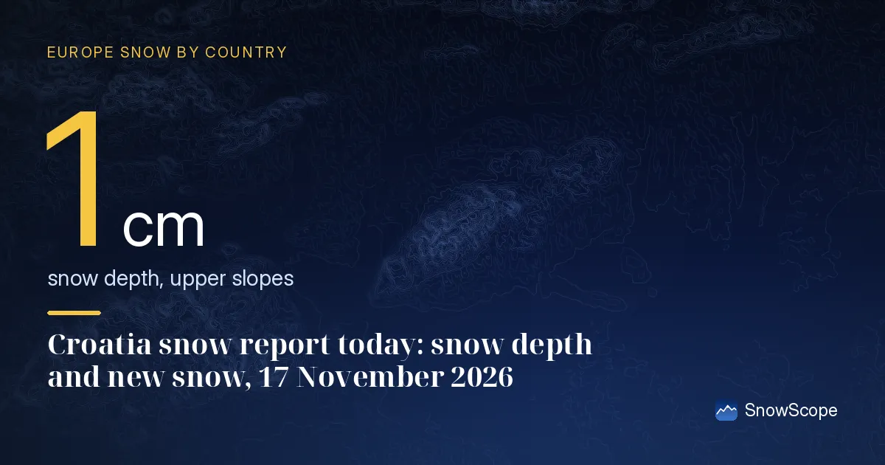

Croatia snow report today: snow depth and new snow, 17 November 2026
Snow covers roughly 10 km² in Croatia on 17 November, 870 km² less than yesterday.
See the live snow forecast for Sljeme in the SnowScope appSnow depth, powder alerts and the 3D map, free.
Today's snow cover
That is close to the 10 km² of a week ago. No height band is mostly white yet.
| Resort | Snow depth | New snow, 72 h | Coming, next days | Top |
|---|---|---|---|---|
| Sljeme | 1 cm | 0 cm | 0 cm | 1,029 m |

Fresh snow
The last three days were dry or nearly so, with no more than 0 cm anywhere.
On the ground
Mild weather is eating into the cover: expect firm snow in the morning and slush in the afternoon.
The next days
Over the next three days up to 0 cm is expected, and up to 9 cm over the week.
Monday 23 November stands out, with up to 5 cm in a day.
Shortlist for the weekend
The deepest snow of the country's resorts is at Sljeme: 1 cm.
Count 1 white resorts out of 4 in Croatia today.
Tips for skiers
- Early-season snow is thin over rocks: ski the groomed runs first.
- Roads to the higher resorts may need winter tyres or chains.
- Check the resort's own lift status before you travel.
About these numbers
Resort snow depths are the deepest snow on the resort's upper slopes from the SnowScope snow model (about 1 km, run of 17 November); they are estimates for an area, not a measurement at one point. Station values are measurements on the date shown. Forecasts can change. Always read the official avalanche bulletin before going off-piste.
Cite this report
For research, teaching or the press: the numbers and charts are free to reuse under CC BY 4.0 with this citation.
SnowScope (2026), Croatia snow report today: snow depth and new snow, 17 November 2026, https://snowscope.app/blog/en/2026/11/croatia-snow-report-17-november-2026.html, accessed 2026-11-17
SnowScope (Atlas Labs). (2026, November 17). Croatia snow report today: snow depth and new snow, 17 November 2026. SnowScope snow reports. https://snowscope.app/blog/en/2026/11/croatia-snow-report-17-november-2026.html
BibTeX
@misc{snowscope2026croatiasnowreport17novem,
author = {{SnowScope (Atlas Labs)}},
title = {Croatia snow report today: snow depth and new snow, 17 November 2026},
year = {2026},
month = nov,
howpublished = {\url{https://snowscope.app/blog/en/2026/11/croatia-snow-report-17-november-2026.html}},
note = {Published 2026-11-17 13:32 UTC; accessed 2026-11-17}
}· CC BY 4.0 · Methods, data and tools →
Sljeme: snow and temperature by height, this winter vs last (tools) →
Follow Sljeme
Free: a message when fresh snow is coming, and the forecast every morning.
More snow reports

We compared the snow on 10 November with each winter's deepest snow at 46 ski resorts over 46 winters. A snowy start helps, but less than many skiers think.

Finland or Sweden? Where the snow is better on 17 November. Snow cover, new snow, resorts and the days ahead in Finland on 17 November.

Only 22 of 170 Czech ski areas show snow cover on 17 November. The Jeseníky and Krkonoše lead with 9 cm and 8 cm in 72 hours. More snow arrives from 20 November.